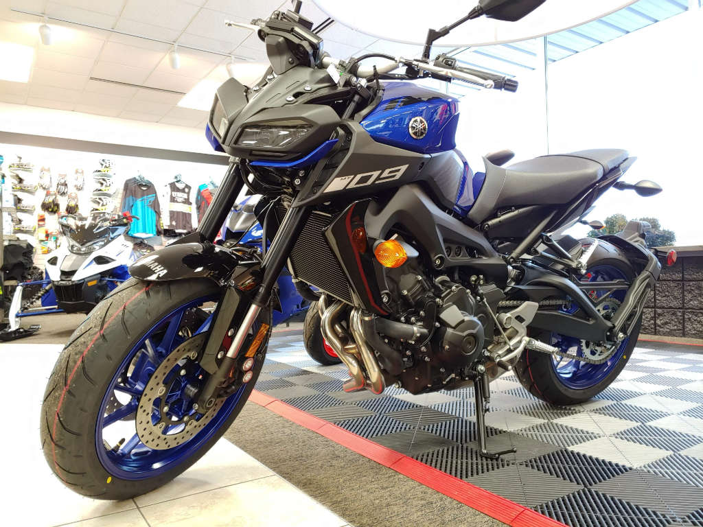
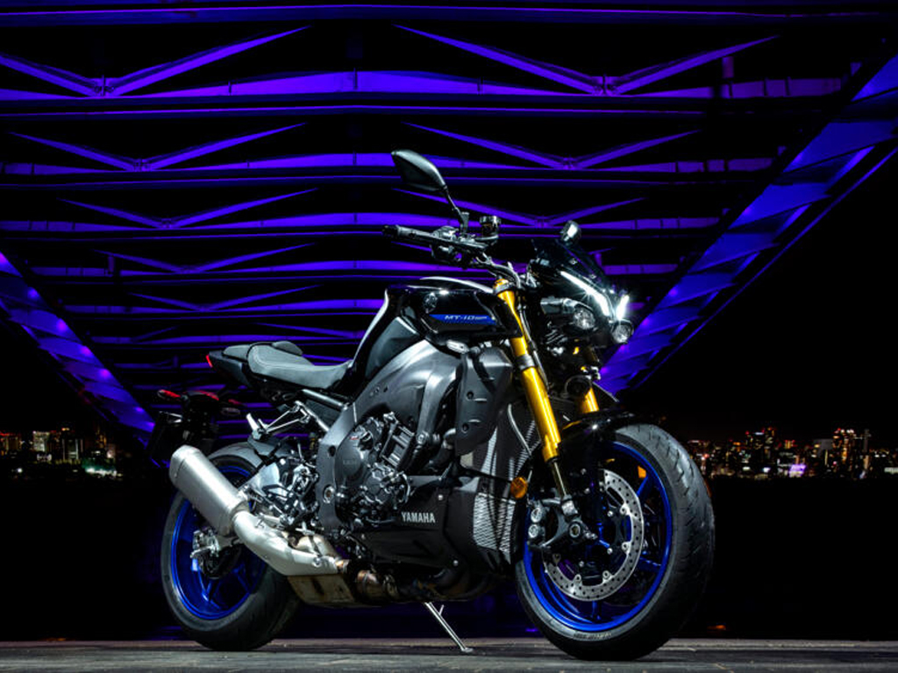
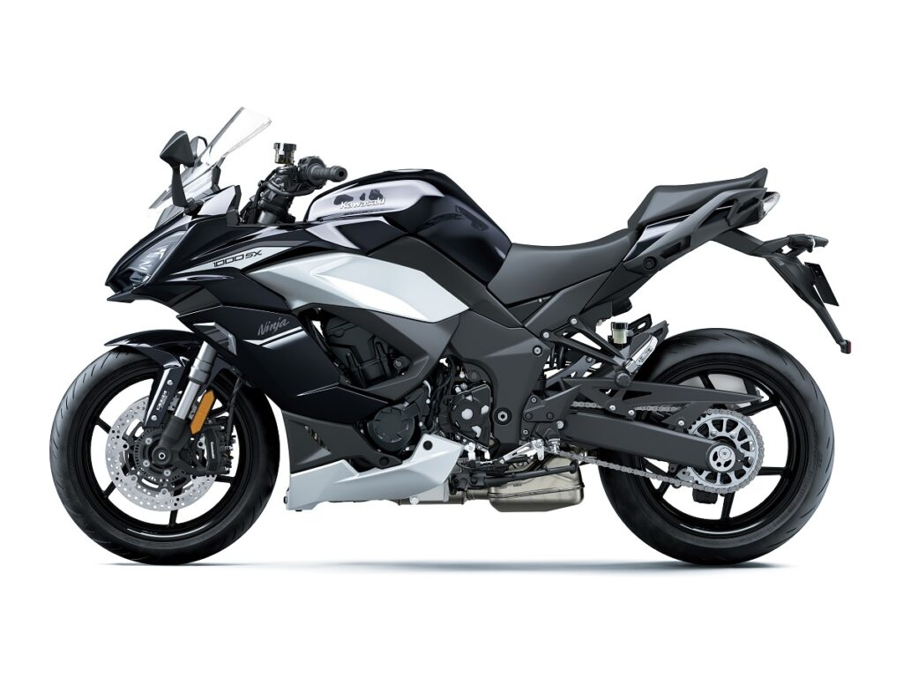
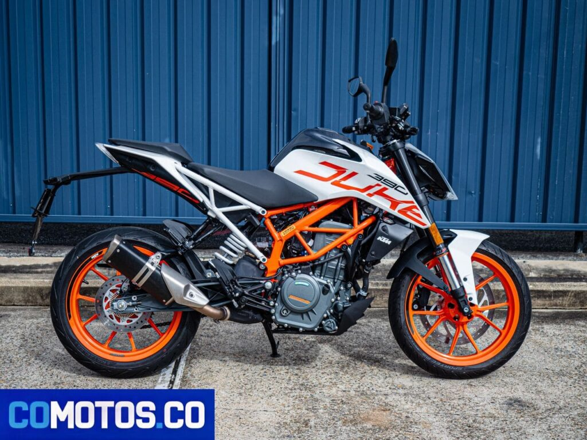

Informacion de las MOTOCICLETAS
Menú principal
Informacion de las MOTOS
Formulario para cotizar una moto
VISITA LA PAGINA DE LA UNIVERSIDAD DE CARTAGENA
Yamaha MT-09

Cilinfraje: 890cc.
Peso: 189 Kg.
Potencia: 117.3 Hp a 10000 rpm.
Precio: 51.000.000 de Pesos
Yamaha MT-10

Cilinfraje: 998cc.
Peso: 210 Kg.
Potencia: 118.0 Hp a 11500 rpm.
Precio: 66.000.000 de Pesos
Kawasaki Ninja 1000

Cilinfraje: 1043cc.
Peso: 236 Kg.
Potencia: 140 Hp a 10000 rpm.
Precio: 56.000.000 de Pesos
KTM Duke 390

Cilinfraje: 373cc.
Peso: 169 Kg.
Potencia: 43 Hp a 9000 rpm.
Precio: 26.000.000 de Pesos
Integrantes: Jesus David Navarro & Maria Isabel Romero